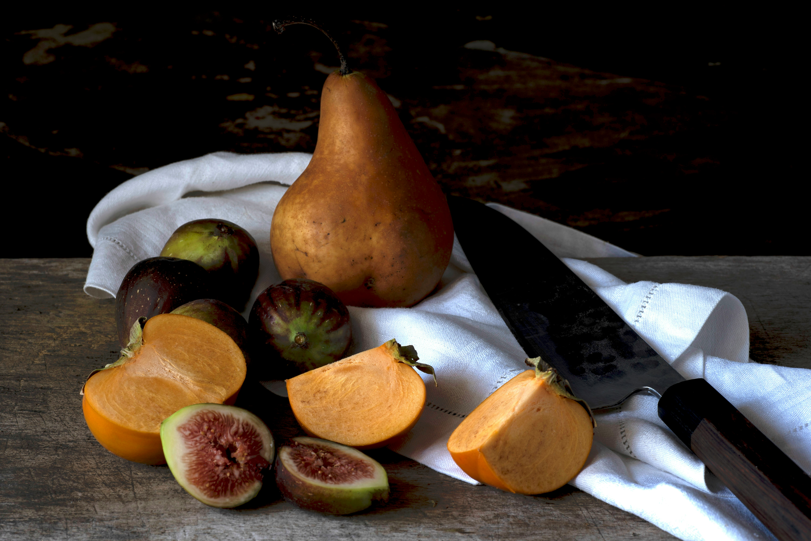
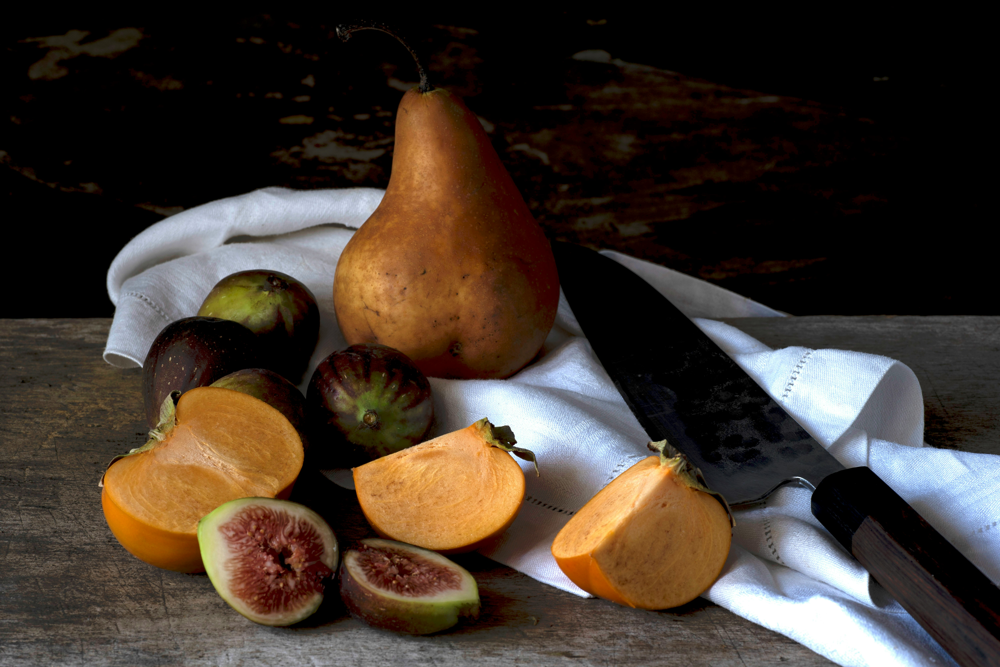

About
What Culinary Creations is All About
I believe food is more than just what’s on your plate—it’s a window into culture, tradition, and connection. Through my blog, I aim to share the stories behind the meals we cherish, the spices that shape our dishes, and the rituals that bring us together around the table.
My goal is to inspire you to see food as a celebration, whether you're exploring new ingredients, embracing old family recipes, or discovering culinary traditions from around the world.
This blog is a space for food lovers, curious cooks, and anyone who appreciates the deep connection between food and life. Join me as we explore everything from everyday meals to the rich history and culture behind each dish.
Let’s explore, create, and connect through food—one story at a time.
Presentation
Food Presentation: "We Eat with Our Eyes First"
Food is an art form, and presentation is just as important as taste. How we place food on the plate can transform an ordinary meal into something extraordinary.
In this blog, I share tips, inspiration, and reflections on the art of food decoration—how colors, textures, and details can awaken the senses and enhance the dining experience.
My goal is to inspire you to see food in a new light and turn every meal into a visual and flavorful delight.
Culture
Food & Culture: Traditions That Brings Us Together
Food is more than just sustenance —it’s a vital part of our traditions and cultures.
On this blog, I explore stories about how food plays a unique role in different societies around the world. Whether through family recipes passed down through generations or the special culinary customs celebrated during holidays, I want to highlight the rich traditions that connect us through food.
At Culinary Creations, I’m passionate about how food creates community, memorable moments, and opens doors to new experiences.